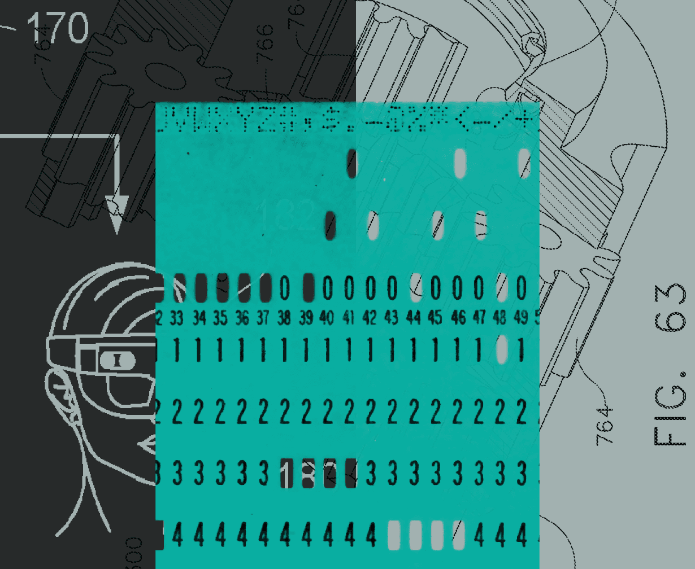
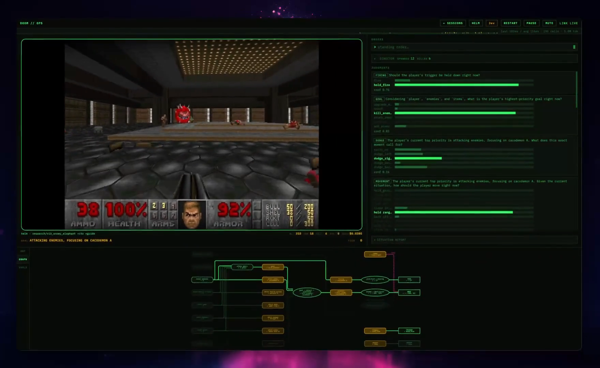
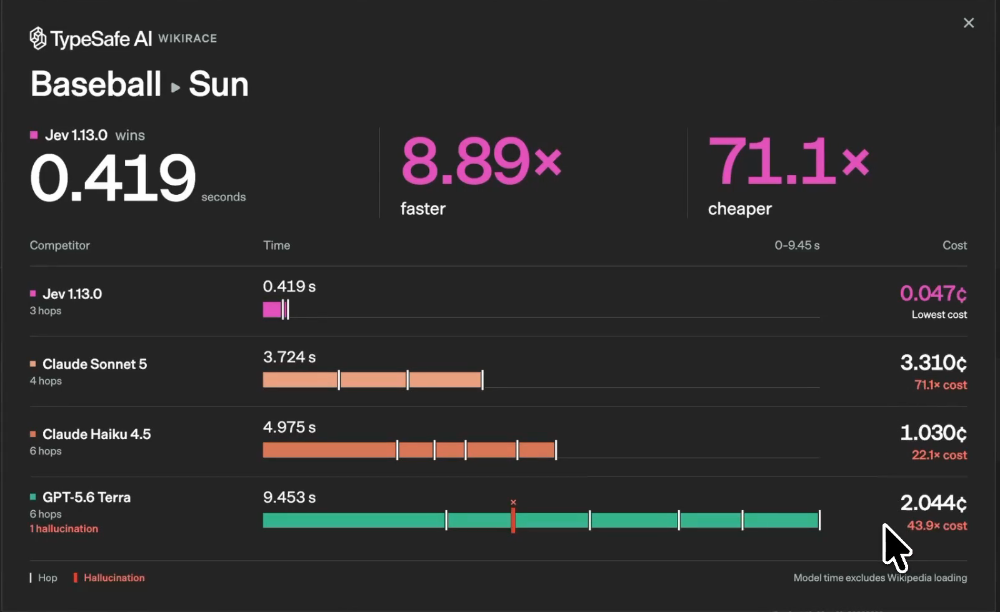
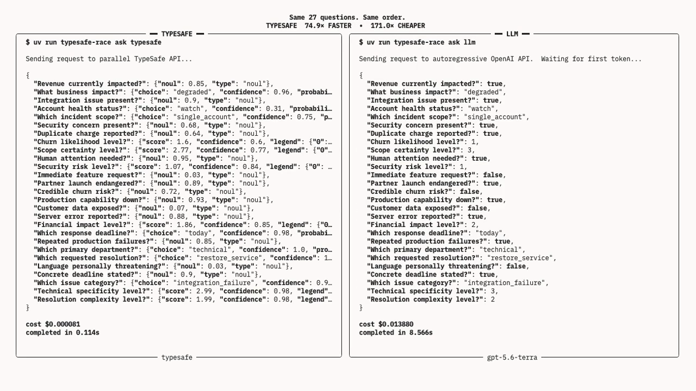
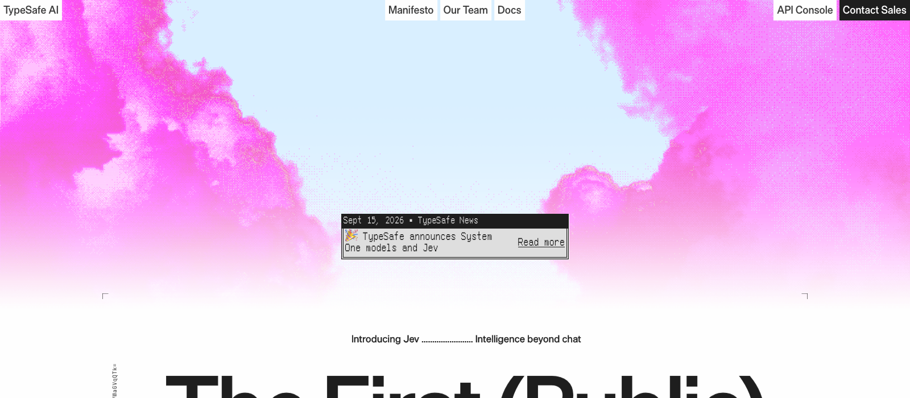

TypeSafe AI · 2026-09-15 发布 · System One Model
Jev
一个不生成文本的模型：给它材料和选择题，它给每个选项一个校准过的概率。发布一周：HN 近 2000 分、Vercel 24 小时 13% 付费团队、15 个开源复现





00背景 · TypeSafe AI · 旧金山
从 OpenAI 后训练组出来的一家公司
00背景 · 2026-09-15 → 09-21 · 左：各模型发布当天 Hacker News 帖子的分数
有多火
00现状 · 这期内容从哪来
没有论文，没有权重：官方公开的，和社区反推的
01什么是 Jev · 官方 demo：同样 27 道题
材料 + 选择题 → 每个选项一个概率
不生成文字、不输出推理链。左：Jev 0.114 s · $0.00008 右：GPT-5.6 Terra 8.566 s · $0.0139
01什么是 Jev · 接口 · 官方文档
输入：材料 + 三种题 输出：类型化答案与概率
每百万输入 token $0.042 · 输出免费 · 单请求 64k · 9 月 21 日起不用排队，注册送 $5
01 接口 · 先分清阶段
训练改参数，推理用参数
先分清两个时间尺度，后面三段动画讲的都是训练
01什么是 Jev · 官方 API · 同一条工单 · 原样
发过去的，和收回来的
请求 · 一个 JSON
POST https://api.typesafe.ai/v1/systemone
Authorization: Bearer <你的 key>
{
"model": "jev-latest",
"state": "你好，我三天前买的会员到现在还没开通，
钱已经扣了，客服电话也打不通，今天不解决我就去投诉。",
"questions": {
"部门": {
"type": "choice",
"instructions": "这条消息应该转给哪个团队？",
"criteria": {"计费": "扣款、发票、退款、支付问题",
"技术": "功能故障、接口、bug",
"销售": "价格、套餐、升级"}
},
"情绪": {
"type": "score",
"instructions": "客户有多生气？",
"criteria": ["平静", "不满但克制", "非常愤怒"]
},
"威胁投诉": {
"type": "noul",
"instructions": "客户是否威胁要投诉或采取进一步行动？"
}
}
}返回 · 全是数
HTTP 200 · 服务端 89 ms · 469 个输入 token · 2026-09-21 实测
{
"model": "jev-1.13.0",
"answers": {
"部门": {
"type": "choice",
"choice": "计费",
"probabilities": {"计费": 0.89, "技术": 0.10, "销售": 0.01},
"confidence": 0.84
},
"情绪": {
"type": "score",
"score": 1.66,
"probabilities": {"0": 0.00, "1": 0.34, "2": 0.66},
"legend": {"0": "平静", "1": "不满但克制", "2": "非常愤怒"},
"confidence": 0.49
},
"威胁投诉": {
"type": "noul",
"noul": 0.98
}
},
"usage": {"input_tokens": 469, "output_tokens": 75}
}
01什么是 Jev · 实测 · jev-1.13.0 · 469 token · 服务端 89 ms
一条工单，三道题，89 毫秒
02Motivation · Diogo Almeida · InstructGPT 作者
「一个任务做对 95%，但不说哪 5% 它不行，就没法自动化」
02 动机 · 校准是什么
“报 0.8”描述一组预测的可靠性
校准概念 · 不是对某一条答案的保证
80 / 100
同一概率组中，约 80 次事件实际成立
理想教学例；实际需足够样本、区间估计与分布稳定03架构 · 计算图 · 由 1 万次探针反推，非官方实现示意
一份 state，三条互不相见的分支，没有 decode
03 架构 · 读图辅助
共享的是材料，每道题仍有自己的条件
接口独立评估可以确认；KV cache / mask 图是解释性假设
03架构 · 放大一条分支 · 部门这道题
最后一个 token 做决定，看得到本分支的一切
03 架构 · 候选语义
改变选项，也改变了模型面对的问题
联合候选效应 · 不应把黑盒现象当作唯一架构证明
03架构 · 返回值公式 + 读出头实现示意（架构未公开）
三种头：softmax · 期望 · sigmoid
03架构 · 证据 · 服务端上报的中位耗时 · Archer Hume 测量
state 变长会增加延迟，大批量题目也会增加延迟
03架构 · 底座 · 官方两句话，其余是反推
底座画像
Transformer，对预训练 LM 做后训练
TechCrunch 采访 · docs · 官方
≈10B
激活参数 · 30k token 跑 160–220 ms 反推 · 70B dense 需要 1 秒多
因果 decoder，大概率 MoE
前缀 KV cache + 后缀分支只在因果注意力下自然成立 · prefill-only 是算力瓶颈
84.6%
MMLU-Pro · 14 个学科 1.2 万道 10 选 1 的知识题 · GPT-4o 72.6%、DeepSeek-R1 84.0%、8B 模型 40–55%
自定义分词器
192 个公开分词器全不匹配 · 数字逐个切 · 最接近 Qwen（348/415 探针一致）
64k/ 32k
整请求 / 单分支上限 · 纯文本 · 英文为主 · 不做按客户微调
04 训练 · 逐步解释
RLHF、RLVR、RLCD：差别在优化目标
官方明确：Jev / TypeSafe 的训练路线是 RLCD
04训练 · 目标与反馈不同；Jev 路线是 RLCD，不是 RLVR
三条后训练路线
| 奖励来自 | 奖励作用在 | 目标倾向（有条件） | 产物 |
|---|
RLHF
Reinforcement Learning from Human Feedback · 人类反馈 | reward model 的偏好分 | 采样出的文本 | 提高偏好响应的概率；可能收窄模式 | 偏好对齐的生成器 |
RLVR
Reinforcement Learning with Verifiable Rewards · 可验证奖励 | 采样答案对不对，0 / 1 | 采样出的那一个动作 | 纯0/1目标倾向奖励高的答案 | 提高可验证任务正确率 |
RLCD
Reinforcement Learning for Calibrated Decisions · 校准的决策 | 校准目标；log / Brier 为教学示例 | 整个分布 p | 理想充分条件下 p 接近真实比例 | 以校准为目标的判断器 |
04 训练 · 逐步解释
RLHF：人类排序，训练奖励，再更新策略
经典 InstructGPT 流程示意 · SFT → 偏好 → reward model → PPO + KL
04 训练 · 逐步解释
RLVR：答案先生成，再由规则验证
可验证奖励示意 · 2 + 3 = 5 · 正确性奖励 1 / 0
04 训练 · 逐步解释
Jev 的 RLCD：让概率接受结果检验
官方路线 + 教学数学示意 · 具体损失和优化器未公开
05数据 · 官方说法 · 原话
创始人怎么说数据
训练数据 100% 合成，采访中的训练数据口径；不指预训练语料
TechCrunch 2026-09-18："trained exclusively on synthetic data"
「我们很早就赌自己会造全部数据，这是我这辈子最好的一个赌注——比这次发布好，比 RLHF 还好」
Diogo Almeida · TechCrunch 采访
公司一半的人在一个实验室里，专门做「统计上被充分理解的合成数据」
TechCrunch："half its staff to a lab developing statistically well-understood synthetic data"
「数据比架构有意思得多」· 任务 > 数据 > 算力 > 算法 · 客户数据不进训练
HN 回复 · 博客 The Bitterest Lesson · docs Models 页
05数据 · 采访：合成训练数据 · 以下生成流程是教学重构
倒果为因：先抽结果，再造材料
05数据 · 模拟器 · 一条工单的四步 · 数字是示例
模拟器怎么造一条数据
05数据 · 转模拟器的旋钮 · 目标分布
三种样本，一个代价
05 数据 · 信息边界
模拟器知道标签，模型未必看见全部信息
保留原版“倒果为因”示例，同时区分潜在状态与可见文本
06实验 · 官方 evals · 四个工作流平均 · 标签 = GPT-6 Astra 与 Fable 5.1 高推理档答案的平均
四个工作流平均：67.8% · $0.0004 · 0.4 s
06实验 · 官方 evals · 准确率 / 每条成本 · 延迟 · 其他模型按供应商默认推理设置
客服和告警持平或胜出，发票输 13–17 个点
| 工作流 | Jev | GPT-5.6 Terra | GPT-5.6 Sol | Opus 5 |
|---|
| 安全告警 | 61.7%
$0.0001 · 0.3 s | 51.2%
$0.0119 · 5.7 s | 62.5%
$0.0295 · 8.5 s | 66.2%
$0.0574 · 15.1 s |
| Agent trace 审核 | 71.6%
$0.0003 · 0.5 s | 73.0%
$0.0209 · 11.4 s | 76.6%
$0.0575 · 40.3 s | 75.2%
$0.1033 · 27.4 s |
| 发票处理 | 61.8%
$0.0011 · 0.5 s | 74.7%
$0.0778 · 17.3 s | 79.1%
$0.2152 · 34.3 s | 78.4%
$0.4856 · 92.1 s |
| 客服 | 76.0%
$0.0001 · 0.4 s | 72.7%
$0.0111 · 6.0 s | 78.3%
$0.0323 · 10.1 s | 72.4%
$0.0579 · 16.6 s |
| 平均 | 67.8%
$0.0004 · 0.4 s | 67.9%
$0.0304 · 10.1 s | 74.1%
$0.0836 · 23.3 s | 73.1%
$0.1761 · 37.8 s |
06实验 · 独立评测 · 校准 · 左：18,514 封邮件的垃圾率按 Jev 报的概率分桶（Arize）
两端可信，中间不可信
06实验 · 独立评测 · 准确率 · 每集 200–300 条
短文本持平小模型，要推理的输给前沿模型
| 任务 | Jev | 对手 | 来源 |
|---|
| Enron 垃圾邮件 · 2 类 | 98.7% | gpt-5.6-luna 98.0% · gpt-5.4-mini 97.7% | amankumar |
| SST-2 情感 · 2 类 | 95.7% | 93.0% · 92.7% | amankumar |
| AG News 主题 · 4 类 | 91.3% | 89.7% · 88.3% | amankumar |
| Banking77 意图 · 77 类 | 76.0% / 0.832 | luna 81.7% · 监督 encoder 0.933 · Terra 0.875 | amankumar · ickma |
| CLINC150 意图 · 150 类 | 0.870 | Terra 0.915 · nano 0.795 | ickma |
| 钓鱼邮件 · 2000 封 | 62.6% | Claude Haiku 4.5 81.3% | XenoSpectrum |
| 49 任务综合 vs GPT-5.6-Luna | 42 / 49 赢或平 | 105 ms vs 710–808 ms · ECE 0.07 vs 0.14–0.18 | jev-decision-bench |
| 18,514 封垃圾邮件 · 零样本 | 98.3% | = 用 1.48 万条标注训的 TF-IDF | Arize |
04 训练 · 营销演示 vs 代码
Jev 通关我的世界？—— 营销演示 vs 代码事实
rmalde/minecraft-agent 静态分析 · commit 78b40ed · 详见 experiment/jev_practice/results/minecraft-agent-debunk.md
07 上游回放 · NanoJev
NanoJev 把“小判断”做成可训练模型
0.6B 开源实现 · 此图描述 NanoJev，不代表 Jev 的内部结构
07 上游回放 · NanoJev
同一张迷宫，NanoJev 先到终点
同一控制器 · 同一步数播放 · 上游录制轨迹
蓝点：当前位置 黑点：终点 浅蓝线：已走路径 · 尝试包含撞墙
07 上游回放 · NanoJev
少的是尝试次数：2,738 → 225
约为 1 / 12.17 · 没有测量推理延迟或端到端耗时
| 所选轨迹 | 总尝试 | 撞墙 | 成功移动 |
|---|
| Jev | 2,738 | 1,044 | 1,694 |
| NanoJev | 225 | 77 | 148 |
07 上游回放 · NanoJev
控制器先过门槛，再优先靠近终点
原代码顺序 · 记录实际反馈，避免重复尝试已知墙壁
07 上游回放 · NanoJev
这次，NanoJev 把所有方向都放过了
143 个访问位置 × 4 个方向 · 最低概率仍为 0.688
572 / 572
记录中的方向概率全部超过 0.5
筛选不再排除方向；距离、访问记录和概率细微差异决定路线07 上游回放 · NanoJev
移除模型判断，同一控制器只用 162 次
新增离线消融 · 所有方向固定 p = 0.5 · 同地图、同预算、同排序规则
| 判断来源 | 尝试次数 | 撞墙次数 |
|---|
| Jev 上游录制 | 2,738 | 1,044 |
| NanoJev 上游录制 | 225 | 77 |
| 本地常数对照：无模型 | 162 | 34 |
07 上游回放 · NanoJev
单条展示，不能替代成功率评估
上游独立 Maze test：10 个案例 · 与展示使用不同控制设置
4 / 10 vs 7 / 10
NanoJev Jev
这页比较独立测试的成功数；不与前页的尝试次数混成一个排名08 服务器实测 · 01 / 16
从原理走向可部署实验
2026-10-06 · 两种替代实现，三层实验问题
模型NanoJev
训练一个小型决策模型
检验任务专门化后的表现
接口SGLang Jev-like
让原有聊天模型直接读出候选概率
检验接口变化的收益
对照标准会话 API
同一个 Qwen、同一个任务
检验速度与长程结果
08 服务器实测 · 02 / 16
本次账号尚未获得 Jev API 权限
访问限制是本次实验条件，不代表所有用户都无法申请
Jev公开资料 + 上游记录
介绍原理与官方训练目标
不把历史轨迹当成新的 Jev 推理
NanoJev源码与权重可本地运行
固定发布 checkpoint
在 A100 上加载并实际推理
SGLang兼容接口可部署
同一 Qwen 服务同时支持
System One 与聊天接口
08 服务器实测 · 03 / 16
共性在决策契约，差异在如何得到概率
输入状态和候选问题，输出可供程序选择的类型化答案
01公开状态
材料、观察、已知记忆
02问题与候选
Choice / Boolean / Score
03候选概率
模型读出或标签评分
04程序行动
选动作、执行、更新状态
三者都可服务决策流程；概率归一化不等于校准，接口相似也不能证明内部实现相同。
08 服务器实测 · 04 / 16
NanoJev：训练底座与决策读出
本次模型基于 Qwen3-0.6B，使用发布的 unified checkpoint
01候选路径
状态 + 问题 + 每个候选
02共享底座
候选表示由 backbone 编码
03决策头
集合交互与共享评分
04概率分布
本次 Choice 经 softmax 输出
有额外训练和决策头；本次直接加载已发布权重，没有重新训练。不是 Jev 的官方权重或完整训练配方。
08 服务器实测 · 05 / 16
SGLang：用原聊天模型评分候选标签
本次 Qwen3.8-27B 权重不变，System One 接口不增加决策训练
01选择题提示
候选映射为 A、B、C…
02一次 prefill
关闭 thinking，不生成答复
03标签分数
读取回答位置的 next-token logits
04候选分布
对给定标签归一化
API：/v1/systemone · 输出 token 为 0；省掉生成并不自动增加规划能力或概率校准。
08 服务器实测 · 06 / 16
三者不能被写成同一种模型
原理参照、社区训练实现、通用模型接口适配
| 维度 | TypeSafe Jev | NanoJev | SGLang Jev-like |
|---|
| 实现来源 | 官方模型服务 | 社区开源决策模型 | SGLang 推理接口 |
| 训练 | 官方称 RLCD | 任务监督与教师目标 | 本轮未新增训练 |
| 本轮权重 | 未在线调用 | Qwen3-0.6B + 决策头 | Qwen3.8-27B 原权重 |
| 校准 | 官方目标；需按任务验证 | 本轮未验证校准 | 标签分布；不默认校准 |
| 可核验范围 | 公开契约与官方资料 | 本地源码、权重与推理 | 服务源码与 API 响应 |
Jev 的完整内部架构和训练配方未公开；不能把 NanoJev 或 SGLang 的实现反推为 Jev 的事实。
08 服务器实测 · 07 / 16
三组实验，回答三个不同的问题
A100 80GB ×1 · SGLang 0.5.21 · 固定模型与数据版本
01 · 跨模型NanoJev vs SGLang
96 个相同离线状态
专家动作匹配 / 教师一致性
02 · 同模型System One vs Chat
96 个相同提示与候选
动作一致性 / HTTP 耗时
03 · 完整任务执行真实 episode
8 个配对初始任务，独立复跑
环境成功率 / 行动成本
08 服务器实测 · 08 / 16
96 条离线题，参考目标并不相同
按 ID 的 SHA-256 排序，每个任务/划分最多取 30 个不同 episode
| 任务 | test / OOD | 参考目标 | 指标含义 |
|---|
| 射击 | 30 / 30 | 专家策略最大概率动作 | 匹配参考动作，不是通关率 |
| 迷宫 | 10 / 10 | 上游 Jev 概率 | 接近教师，不代表真实正确 |
| 贪吃蛇 | 8 / 8 | 上游 Jev 概率 | 接近教师，不代表真实正确 |
不同 episode 不足 30 时全部纳入；不是全量 4,438 条数据。教师概率没有作为模型输入。
08 服务器实测 · 09 / 16
NanoJev 更贴合这批参考目标
小样本离线对照 · 两模型不同，不能把差异归因于接口
| 划分 / 任务 | 题数 | NanoJev | SGLang | 比较口径 |
|---|
| TEST / 射击 | 30 | 73.3% | 13.3% | 专家动作匹配 |
| OOD / 射击 | 30 | 83.3% | 26.7% | 专家动作匹配 |
| TEST / 迷宫 | 10 | 70.0% | 10.0% | Jev 教师一致 |
| OOD / 迷宫 | 10 | 60.0% | 50.0% | Jev 教师一致 |
| TEST / 贪吃蛇 | 8 | 87.5% | 62.5% | Jev 教师一致 |
| OOD / 贪吃蛇 | 8 | 87.5% | 100.0% | Jev 教师一致 |
射击合计 47/60 vs 12/60；教师首选动作合计 27/36 vs 19/36。OOD 贪吃蛇上 SGLang 为 8/8。
08 服务器实测 · 10 / 16
35.4 ms 与 158.2 ms 描述两套部署
跨模型延迟：NanoJev 同进程调用，SGLang 经 localhost HTTP
NanoJev · 中位数35.4 ms
0.6B 底座 + 决策头
FP32 驻留，BF16 autocast
SGLang · 中位数158.2 ms
27B 聊天模型，BF16
System One HTTP 请求
解释边界不作公平速度排名
模型规模、路径、编码不同
没有排除这些混杂因素
08 服务器实测 · 11 / 16
同一 Qwen，才能检验接口变化
三组采用同一 renderer、候选顺序与关闭 thinking 的模板
| 组 | 路径 | 输出预算 | 96 题相对 A 的动作一致 |
|---|
| A · System One | 候选标签评分 | 0 生成 token | 参照 |
| B · Chat | 贪心生成一个字母 | 最多 1 token | 96 / 96 |
| C · Chat | 常规短答并结束 | 最多 32；实际均值 2 | 95 / 96 |
96 题输入 token 数逐题相同；代表样本完整 token ID 序列相同。C 的一题差异尚待确定性复查。
08 服务器实测 · 12 / 16
不生成文本，不保证判断普遍更快
同提示的 96 题 HTTP 耗时中位数 · 小规模 pilot
0 个生成 token
优化的单字母回答
实际输出均值 2 token
未清空 prefix cache；每题一次测量。计时至响应 JSON 读取完成，不能推广为稳定性能排名。
08 服务器实测 · 13 / 16
完整任务中，两种接口的轨迹一致
迷宫与贪吃蛇 · 8 个相同初始世界与种子 · 关闭 thinking、贪心选动作
真实环境成功6 / 8 = 6 / 8
System One 与 1-token Chat
逐局独立 reset，相同物理预算
动作序列一致8 / 8 对
每组物理步骤总计 555
每组实际模型调用 460 次
最长成功实例149 个物理步骤
16×16 迷宫，两组都到达
含已知边上的代码重定位
08 服务器实测 · 14 / 16
长程耗时约降 11%，任务结果一致
独立复跑期间未发送其他模型请求 · 两组各 460 次请求
6/8 成功，555 个物理步骤
6/8 成功，555 个物理步骤
单位：累计模型 HTTP 秒数；System One 低约 11.0%。8 个 case、缓存未严格控制，不是稳定速度结论。
08 服务器实测 · 15 / 16
NanoJev 的优势，尚不能归因于校准
本次是 0.6B 底座，不是 0.5B；动作匹配与概率校准是不同指标
数据观察专家匹配 78.3%
NanoJev 47/60，SGLang 12/60
这是参考动作匹配，非通关率
合理解释任务监督与适配
NanoJev 接受专家/教师目标训练
通用 Qwen 仅换评分接口
待检验假设校准带来优势？
缺少训练前后与校准消融
未测独立结果上的可靠性
08 服务器实测 · 16 / 16
输出预算影响速度，长程质量未变
把数据观察、机制解释与待验证假设分开
NanoJev vs Jev-like适配值得研究
0.6B 专门训练更贴合参考目标
校准贡献尚未被独立验证
短输出 · 同 Qwen收益取决于基线
85.7 ms < 常规短答 119.7 ms
但 > 1-token Chat 57.5 ms
完整任务 · 同 Qwen质量相同，耗时有差
两组均 6/8，8 对轨迹一致
107.7 vs 121.0 秒：约降 11%
09未来 · LangChain / Vercel / 官方 cookbook 里已经接上的位置
一个 agent 任务里，判断点比生成点多
09未来 · 启示
发现问题的重要性
创始人的排序：任务 > 数据 > 算力 > 算法
结构：一周内被复现 15 次 — 不是护城河
数据与校准：是否追平需同协议验证 — 是护城河，但也只是执行
问题：软件里的判断，不需要生成，需要把握 — 将这一需求产品化
InstructGPT 的配方是「换任务」；Jev 又换了一次任务。
Jev
材料 + 选择题 → 每个选项一个校准过的概率
结构化接口 · 时延、费用、校准都要按任务验证 · 用自己的数据验一遍